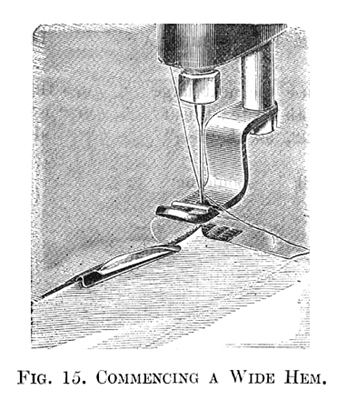

I N S T R U C T I O N S
FOR THE USE OF
FRISTER AND ROSSMANN'S
Automatic Chainstitch
Sewing Machines
PART FOUR
THE GUIDE
Fasten the Guide to Cloth Plate by Guide Screw, as far from the Needle as you wish the sewing to be from edge of the work.
TO BRAID
In the upper side of the Presser Foot you will find a groove crossed by a small wire; insert the braid in this groove under the wire, and draw the end from you under the Presser Foot. All that is now necessary is to turn the cloth, so as to follow any desired pattern, as shown in the above cut (Fig. 9), and the braid will draw through the groove, and be sewed down by the needle and thread. In turning square corners (see direction "To Turn A Corner", page 9), draw up the braid a little before approaching the corner. Use from 16 to 20 stitches to the inch.
THE QUILTER
Fasten Quilter to frame, from behind the Foot Bar, by means of the Guide Screw, and set the blade at such a distance from the Needle as to make the desired space between the rows of stitching, and sufficiently above
the Cloth Plate to allow the work to pass freely; crease the goods on a true bias through the centre of the work, and sew the first row of stitching on the crease. Move the work to the right until the line of stitching is under the blade of the Quilter, which serves as a guide for the distance between rows.
For Squares, again crease it through the centre on a true bias and proceed as before.
For Diamonds, the cross rows of stitching should be parallel to the edge of the goods.
The Quilter is also used as a top guide for stitching three-ply tucks.
THE GATHERER
Place the Gatherer on the Presser Foot, until it touches the Wire on the upper side, as shown above.
Use stitch from 12 to 16 to the inch.
Use No. 40 Cotton (glacé preferred). See that the Reel turns freely on the Spool Pin.
To Thread (for gathering) leave the cotton out of Pull-off (Fig. 1, No. 1), and draw it direct from the Reel into the groove of the Automatic Tension (Fig. 1, No. 2), then Thread the Pin (Fig. 1, No. 3), &c., as usual.
Place the work in the ordinary way, and allow it to feed freely.
If it does not gather full enough, lengthen the stitch; or increase the tension, by taking hold of the thread between the Automatic Tension (2, Fig. 1), and the Thread Pin (3, Fig. 1), and, winding it once oftener in groove of Tension - with Needle at highest point - not more than three times in all. If too full, shorten stitch, or unwind extra coil of thread from Tension.
The fulness of gathering depends on softness of goods, length of stitch and tightness of tension.
For Nainsook, sixteen stitches to the inch, and no extra turns of thread around Tension, or at most one turn, will answer.
For Calico, twelve stitches to the inch, and three turns around Tension may be required.
TO GATHER AND SEW ON BAND AT THE SAME TIME
Put gatherer on Presser Foot. Thread as for ordinary sewing, with No. 60 or 70 cotton, using twelve stitches to the inch. Put the piece to be gathered under the band, holding band with right hand and under piece with left.
Hold back band, so that feed can only make short stitches.
The fulness and regularity of gathering depend entirely upon the skill of operator in holding band.
TO EMBROIDER
Use a No. 4 needle and E or F silk.* Thread as usual, but pass the thread from back to front through the Embroidery Spring, after threading through the Staple (4, Fig. 1).
* E silk is equal to No. 10. See page 6.
When the fabric is very thin, 12 stitches to the inch may tend to pucker the work; if so, shorten to 13 or 14. With very thin material, it is well to trace the pattern on paper and tack it to the work on the wrong side.
NARROW HEMMER
Fasten the Narrow Hemmer to the Cloth Plate with the Hemmer Nut. Raise Presser Foot, and, without any folding, pass the edge of fabric to be hemmed between the blades. With a Needle push forward
the goods, until the front edge is under the needle. Let down the Presser Foot, and proceed, keeping the edge of the goods against the edge of the Hemmer.
As the fabric passes through the Hemmer, the fingers placed against it, it makes it run out straight to the end of hem.
If it is necessary to take the material out of the Hemmer before
finishing, without letting it feed through, raise the Presser
Foot and pull the work from you; not backwards or sideways, or you will
injure the Hemmer.
In hemming, use the next larger stitch to that indicated by the "table" on the Cloth Plate, thus for 70 cotton use 20 stitches to the inch, instead of 22, as the feeding is retarded somewhat by the Hemmer.
The Hemmer Blades should never be bent.
TO MAKE NARROW HEM AND SEW ON TRIMMING AT THE SAME TIME
Place edge of trimming between hem and feed surface, guiding with the finger, so as to stitch edge fast beneath hem; or, place edge of trimming over the Narrow Hemmer and through the opening in the Presser Foot, thus stitching the trimming to the top of the hem.
THE FELLER AND WIDE HEMMER
The Feller is useful in making underclothing, as it turns a beautifully neat and uniform fell, no tacking or fixing being required. It may also be used as a Hemmer when a wider hem is required than those turned by the Hemmers already described.
TO MAKE A WIDE HEM
The edge to be hemmed should be cut instead of torn; for if the edge is stretched through being torn, or otherwise, the material where the seam is sewn must be stretched to an equal length. The material

must be folded down evenly, and distinctly creased with a wider than the width of hem desired. The edge is then placed in the Hemmer (Fig. 15), the lower fold entering under the upper blade and upper fold passing over it. The edge of the material is kept up against the turn of the blade during the process of stitching the hem.
This is generally done by the aid of the guide, as shown in Fig. 16, which serves to guide the work, and holds the edge in the Hemmer.
TO MAKE A FELLED SEAM
Lay the two pieces one upon the other, the under piece projecting beyond the upper. Sew them together with the Machine, allowing for a hem of such width as will be suitable to the material. Turn the work over, open it out and crease the seam down with the narrow edge inside. Then attach the Feller and insert the edge as in Fig. 15; hold the seam, where it is joined, well up against the side of the blade of the Feller (Fig. 17); keep it in this position, as the work passes through, guiding it gently against the blade of the Feller with the first finger of the right hand; at the same time with the left hand keep the work smooth, and gently guide it towards the left.
The first seam of a fell on the bias should always be begun from the narrow end of the work.
If the Feller does not turn in all the raw edge of the material, the seam is too wide.
Part One
| Part Two | Part
Three | Part Five